Overview
The Toolbar menu allows users to quickly and easily access many features of the Sandbox Editor through the icons at the top of the screen. The following article is a brief summary of the default toolbars and the settings that are available in the Sandbox Editor.
While the majority of the toolbars are self-explanatory some require a more detailed explanation in their use. For those particular toolbars, then sub pages (child) pages of this main Toolbars page have been created.
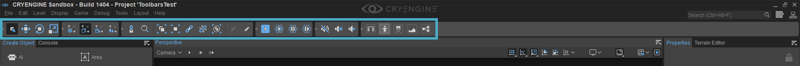
The toolbar icon size can also be customized: Edit -> Preferences -> General Settings -> General -> Toolbar Icon Size. By default it is set to '0' (default = 32 pixels).
Accessing the Toolbar Context Menu
Right-click on the toolbar (to the right of the last displayed toolbar icon), this will display the Toolbar Context menu. Selecting a toolbar (left-click) will add it to main toolbar. Each toolbar can be moved and can be positioned horizontally at the top of the Editor, vertically on the sides or can be completely un-docked from the Sandbox Editor, for example placed on another monitor.
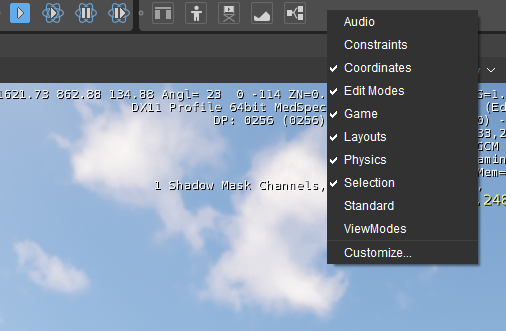
Audio Toolbar
The Audio Toolbar contains buttons to control the playing of sounds in the Viewport while editing: Mute Audio, Stop All Sounds, and Refresh Audio.
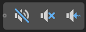
Constraints Toolbar
The Constraints Toolbar contains buttons to constrain movement, rotation and scaling of objects to certain axes: X, Y, Z and XY.
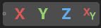
Coordinates Toolbar
The Coordinates Toolbar contains buttons to change the Coordinate System: World, Local, View, Parent.
Please see this page for more information about the Coordinate System.
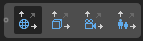
Edit Modes Toolbar
The Edit Modes Toolbar contains the standard buttons used for manipulating objects: Select, Move, Rotate and Scale.
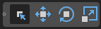
Game Toolbar
The Game Toolbar contains tools that help you test your level: Switch to Game, Enable Physics/AI, Toggle single-step mode in physics and Do a single step.
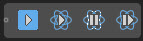
Layouts Toolbar
The Layouts Toolbr contains buttons to activate different preset layouts: Default Layout, Animation Layout, Cinematic Layout, Level Design Layout and Flow Graph Layout.
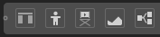
Physics Toolbar
The Physics Toolbar contains buttons to Reset Physics State, Get Physics State, Simulate Objects and Enable Physics Tool mode.
Please see this page for more information about the new Physics Tool.
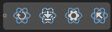
Selection Toolbar
The Selection Toolbar contains buttons to use when selecting items: Go to Selection, Find, Group, Ungroup, Link, Unlink, Create Prefab, Freeze Selection and Unfreeze All Objects.
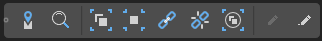
Standard Toolbar
The standard toolbar contains the standard Save, Open, Export to Engine, and Undo and Redo options.
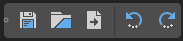
ViewModes Toolbar
For more detailed information about this page, please see this page.
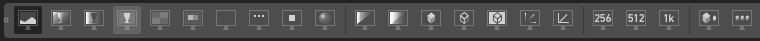
Customizing Toolbars
CRYENGINE lets you create and customize the toolbars to your heart's content. For more information on how to do this, click here.
Project Toolbars
When working in a team of developers and using source control, it is possible to share your custom toolbars with others very easily.
To do this:
- Copy its .json file from your local settings folder (C:\Users\<User_Name>\AppData\Roaming\Crytek\CRYENGINE\<User_Data_Version>\Toolbars\Mainframe, by default).
- Paste this file into the Editor\Toolbars\Mainframe folder in the game project folder. This latter folder may need to be created as it doesn't exist by default.
Keep in mind that since AppData is a hidden folder, you may need to change your settings to be able to see hidden items.
Now the custom toolbar can be checked in to source control along with the rest of the project data so that they appear for the rest of the team as well, next to any toolbars they have created for themselves.
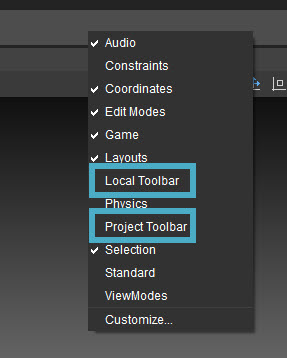
Activating local and project toolbar
Tool-Specific Toolbars
A number of tools have their own tool-specific toolbars which have buttons specific to that tool. These can be customized in the same way as the main toolbar mentioned above, meaning that Customizing ToolBars also applies to them.